CS 180 · Fall 2026 · Project 4A & 4B
Recovering homographies, warping and rectifying images, blending photos into mosaics, and finding correspondences automatically
Two photos taken from the same spot but pointed in different directions are related by a projective transformation, or homography. In this project I shot sets of overlapping photos, clicked matching points between them, solved for the homography, and wrote my own inverse warping with nearest-neighbor and bilinear interpolation. I then used the warps to rectify flat objects and to stitch each set into a mosaic. The homography and warping code is my own; no findHomography, warpPerspective or skimage.transform.warp.
All the work below is done on copies of the photos shrunk to 1200 pixels wide, so the warps run in well under a second.
Three sets of two photos, each pair taken from one spot by rotating the phone.
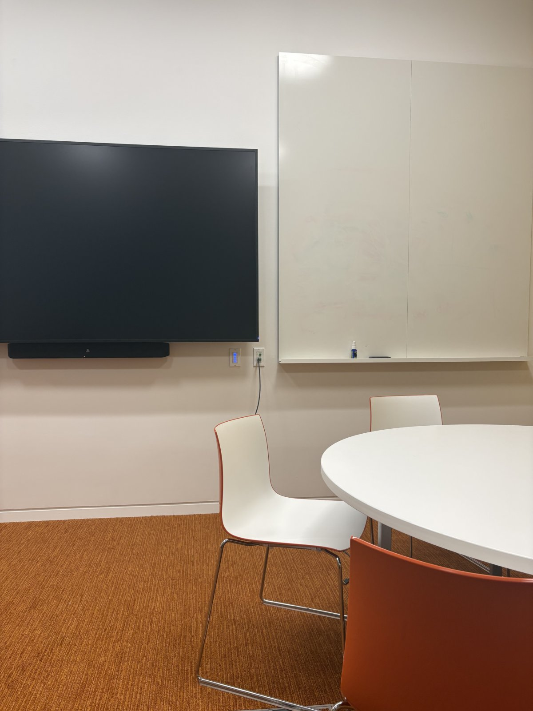
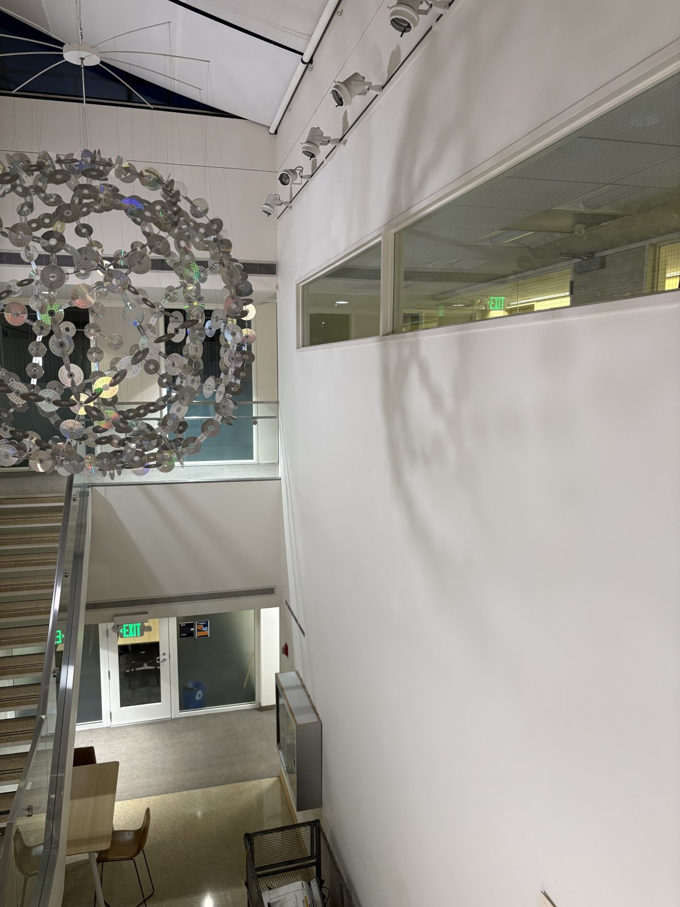
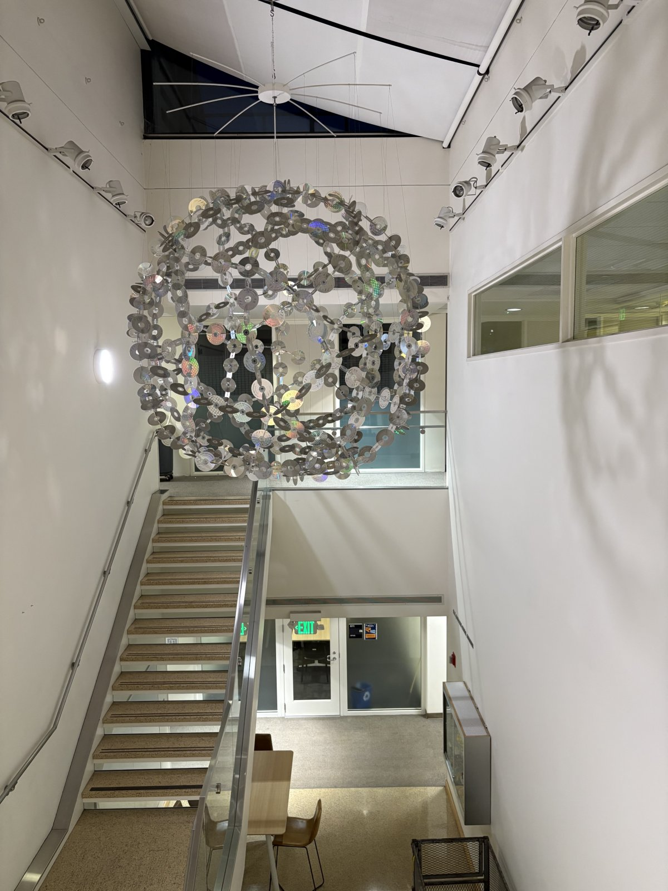
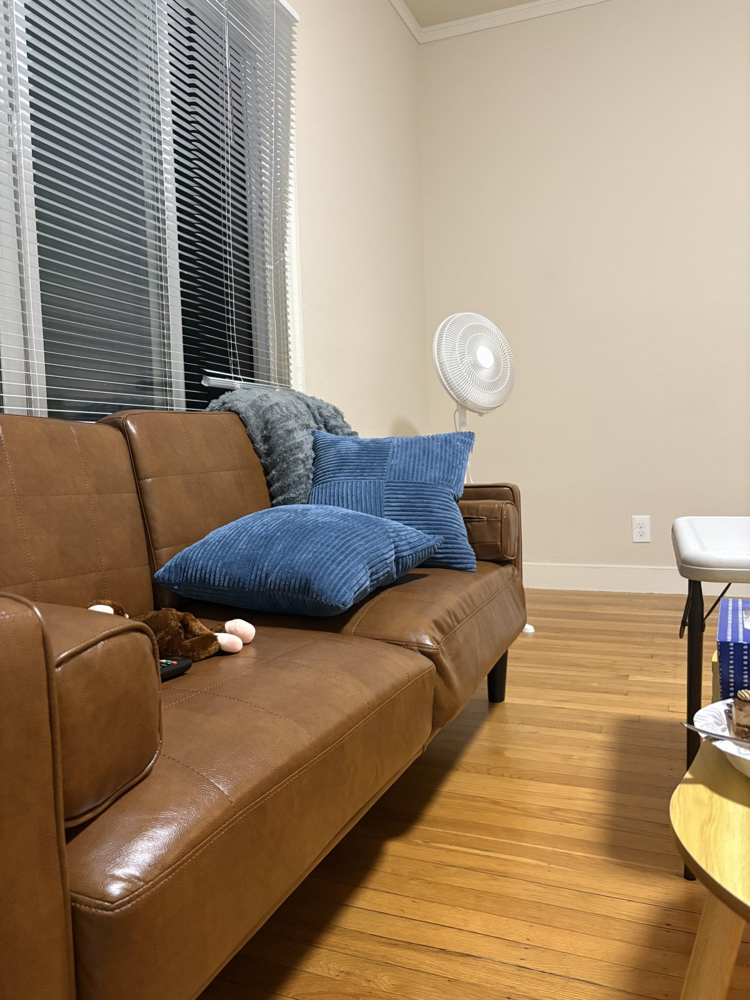
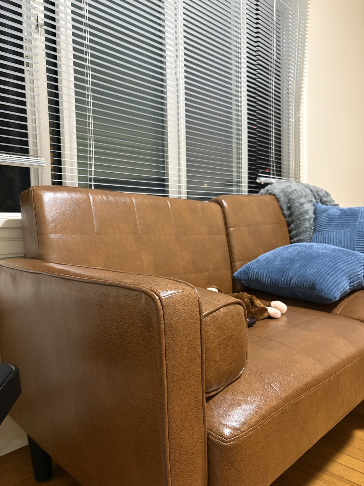
Solving for the 3×3 matrix H that maps points in image 1 to the matching points in image 2.
A point (x, y) in image 1 maps to (x′, y′) in image 2 through H, with a divide at the end:
x' = (h1·x + h2·y + h3) / (h7·x + h8·y + 1)
y' = (h4·x + h5·y + h6) / (h7·x + h8·y + 1)The bottom-right entry of H is fixed at 1, which leaves 8 unknowns. Multiplying through by the denominator turns each pair of matching points into two equations that are linear in h:
[ x y 1 0 0 0 -x·x' -y·x' ] · h = x'
[ 0 0 0 x y 1 -x·y' -y·y' ] · h = y'Stacking these for n points gives a 2n × 8 system Ah = b. Four points would solve it exactly, but a few pixels of clicking error throw that solution off, so I clicked 10 points per pair and solved with least squares. For example, the first soda point, (521.9, 501.7) → (846.8, 536.3), contributes these two rows:
[ 521.9 501.7 1 0 0 0 -441932.5 -424824.8 ] · h = 846.8
[ 0 0 0 521.9 501.7 1 -279875.2 -269040.9 ] · h = 536.3def computeH(im1_pts, im2_pts):
A, b = [], []
for (x, y), (xp, yp) in zip(im1_pts, im2_pts):
A.append([x, y, 1, 0, 0, 0, -x * xp, -y * xp]); b.append(xp)
A.append([0, 0, 0, x, y, 1, -x * yp, -y * yp]); b.append(yp)
h, *_ = np.linalg.lstsq(np.array(A), np.array(b), rcond=None)
return np.append(h, 1).reshape(3, 3)I clicked the points with plt.ginput on the two images placed side by side, alternating left and right so each pair stays in order. I picked sharp corners that are easy to find in both photos, like the whiteboard corners, outlets, window frames and stair edges, and spread them across the overlap.
Each H maps image 1 into image 2's frame. The error is the distance between where H sends each clicked point and where I clicked its match.
H_gateway = [[ 0.7586 -0.01587 515.7 ]
[ -0.05285 0.8544 39.00 ]
[ -1.050e-04 -6.911e-05 1 ]]
H_soda = [[ 0.6773 -0.04358 386.4 ]
[ -0.2020 0.8173 149.5 ]
[ -2.501e-04 -3.725e-05 1 ]]
H_sofa = [[ 0.4002 -0.03259 562.0 ]
[ -0.3141 0.7102 151.9 ]
[ -3.877e-04 -1.091e-04 1 ]]| Set | Points | Mean error | Max error |
|---|---|---|---|
| Gateway | 10 | 16.45 px | 49.66 px |
| Soda | 10 | 4.73 px | 8.83 px |
| Sofa | 10 | 11.07 px | 32.23 px |
Soda fits best because its points sit on walls, windows and stairs that are all fairly far from the camera. The sofa points are all on the sofa, which is close to the camera, so a small shift of the phone between shots moves them more than a single homography can explain.
Inverse warping with nearest-neighbor and bilinear interpolation, written from scratch.
Pushing each input pixel forward through H leaves holes in the output, so I warp in reverse. I first send the input's four corners through H to find the output's bounding box. Then, for every output pixel, I apply H−1 to find where it came from in the input and sample the color there. That location almost always falls between pixels:
Output pixels whose source falls outside the input get marked in an alpha mask, which I use later for blending. Everything is vectorized with NumPy, so there are no Python loops over pixels.
def warpImageNearestNeighbor(im, H, bbox=None):
h, w = im.shape[:2]
sx, sy, shape, offset = output_grid(im, H, bbox) # H^-1 applied to every output pixel
xr, yr = np.round(sx).astype(int), np.round(sy).astype(int)
valid = (xr >= 0) & (xr < w) & (yr >= 0) & (yr < h)
out = np.zeros((len(sx), im.shape[2]))
out[valid] = im[yr[valid], xr[valid]]
return out.reshape(*shape, -1), valid.reshape(shape), offsetdef warpImageBilinear(im, H, bbox=None):
h, w = im.shape[:2]
sx, sy, shape, offset = output_grid(im, H, bbox) # H^-1 applied to every output pixel
valid = (sx >= 0) & (sx <= w-1) & (sy >= 0) & (sy <= h-1)
x, y = sx[valid], sy[valid]
x0, y0 = np.floor(x).astype(int), np.floor(y).astype(int)
x1, y1 = np.minimum(x0 + 1, w-1), np.minimum(y0 + 1, h-1)
dx, dy = (x - x0)[:, None], (y - y0)[:, None]
val = (im[y0, x0] * (1-dx) * (1-dy) + im[y0, x1] * dx * (1-dy)
+ im[y1, x0] * (1-dx) * dy + im[y1, x1] * dx * dy)
out = np.zeros((len(sx), im.shape[2]))
out[valid] = val
return out.reshape(*shape, -1), valid.reshape(shape), offsetTo test the warp, I clicked the four corners of a flat rectangle seen at an angle (top-left, top-right, bottom-right, bottom-left), mapped them to the corners of an upright rectangle, and warped. I set the output box to just the rectangle; otherwise points near the horizon line map to huge coordinates and the output becomes enormous.
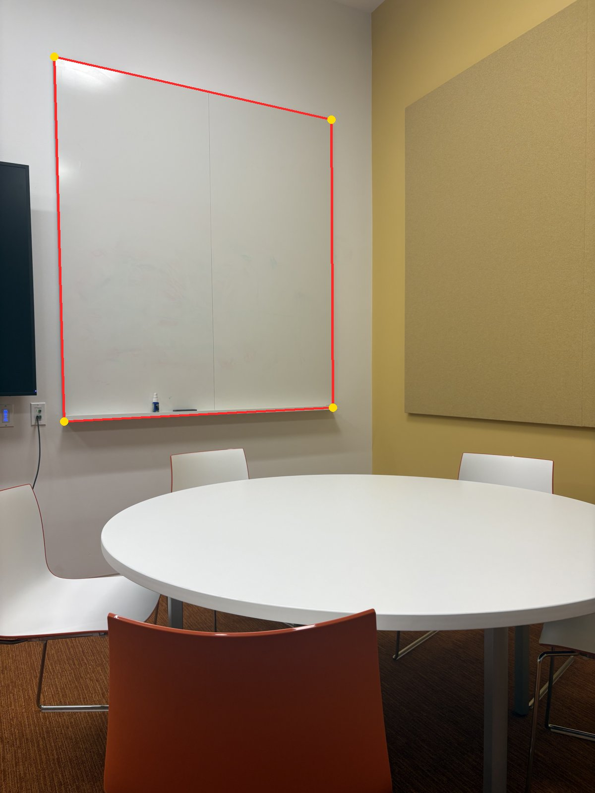
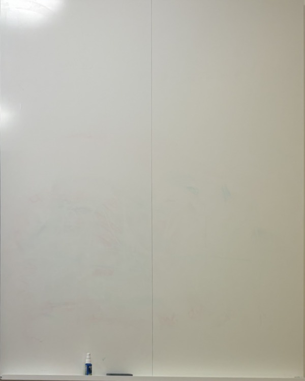
The whiteboard now looks straight-on: the seam between its two panels is vertical and the marker tray is level.
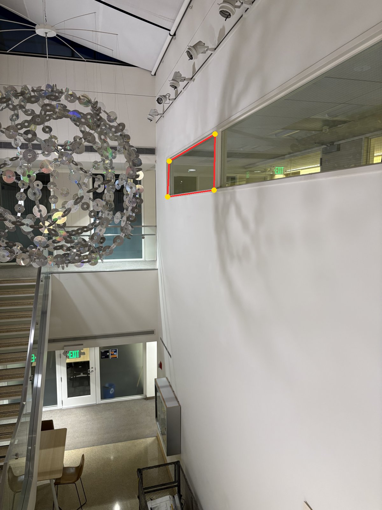
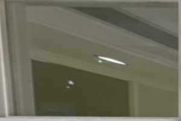
The window frame comes out as a rectangle. The ceiling and room seen through the glass are still slanted, because they're behind the glass rather than in the same plane, and a homography only straightens the one plane it was fit to.
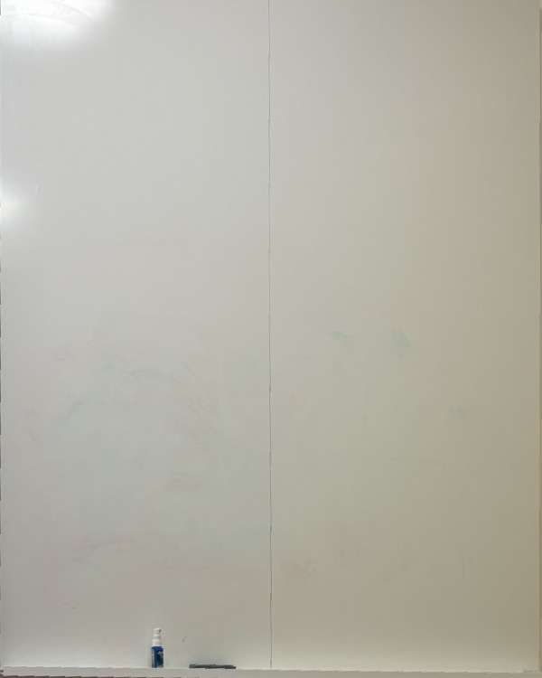
Zoomed in, the difference is easier to see:
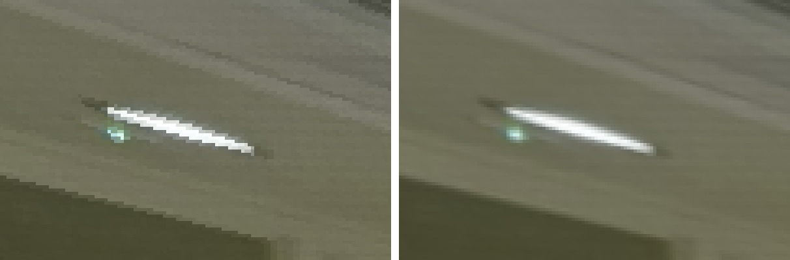
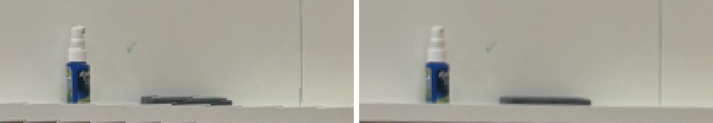
| Warp | Nearest neighbor | Bilinear |
|---|---|---|
| Window rectification (300 × 200) | 0.003 s | 0.008 s |
| Whiteboard rectification (600 × 750) | 0.026 s | 0.068 s |
| Full warp, soda1 into soda2's frame | 0.21 s | 0.44 s |
Bilinear is about 2–2.5× slower, since it reads four pixels and does several multiplies for every output pixel where nearest neighbor reads one. The quality difference is clearest on the window, which is enlarged by the warp: nearest neighbor turns the diagonal edges and the light fixture into stair steps, while bilinear keeps them smooth at the cost of looking slightly softer.
Warping image 1 into image 2's frame and blending the overlap so there's no visible seam.
My procedure for each set:
warpImageBilinear(im1, H). The warp returns the offset of its top-left corner, which I use to place both images on one canvas big enough to hold them.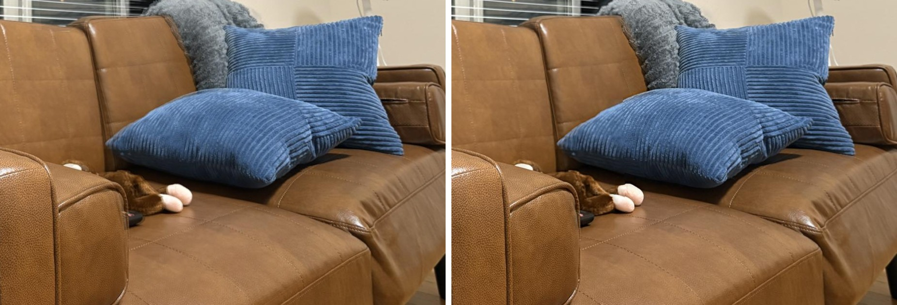
In the overlap, the feathered version averages two slightly misaligned copies, so the corduroy on the pillows and the leather grain look soft and faintly doubled. The two-band blend keeps the detail from one image at a time and stays sharp, while the colors still transition smoothly.
In Part A I clicked the correspondences by hand. In Part B the computer finds them, following “Multi-Image Matching using Multi-Scale Oriented Patches” by Brown, Szeliski and Winder: detect corners, describe the patch around each one, match the descriptors between images, and fit the homography with RANSAC. I use the same 1200-pixel-wide photos as Part A, so the automatic points share coordinates with my hand-clicked ones.
Finding corners, then keeping a strong, evenly spread subset of them.
I run the single-scale Harris detector from the course's harris.py on the grayscale image. It computes a corner strength at every pixel and keeps each local maximum, throwing out anything within 20 pixels of the border so a full 40×40 descriptor window fits around every corner later.
Taken as is, that keeps every tiny local bump, including camera noise on the blank walls: 53,330 corners on soda1 and 51,969 on soda2, enough to cover the whole image in red. So I also drop corners weaker than 1% of the image's strongest response, which leaves 5,533 and 6,978 real corners.
Matching only needs a few hundred corners, but simply keeping the strongest ones would put almost all of them on the CD chandelier, the most textured thing in the scene. ANMS keeps corners that are strong and spread out. For each corner I find its suppression radius: the distance to the nearest corner that is clearly stronger, meaning its own strength is less than 0.9 times that one's. A corner that is only beaten by far-away corners gets a large radius. I keep the 500 corners with the largest radii.
Computing the radii takes the distance between every pair of corners, so I first keep only the 5,000 strongest corners to keep that matrix a manageable size. All of it is vectorized with no Python loops:
def anms(h, coords, n_ip=500, c_robust=0.9, max_candidates=5000):
ys, xs = coords
f = h[ys, xs] # corner strengths
if len(f) > max_candidates: # keep only the strongest
keep = np.argsort(-f)[:max_candidates]
ys, xs, f = ys[keep], xs[keep], f[keep]
pts = np.column_stack([xs, ys]).astype(float)
D = dist2(pts, pts) # pairwise squared distances
mask = f[:, None] < c_robust * f[None, :] # j is clearly stronger than i
radius = np.where(mask, D, np.inf).min(axis=1) # nearest clearly-stronger corner
best = np.argsort(-radius)[:n_ip]
return np.vstack([ys[best], xs[best]])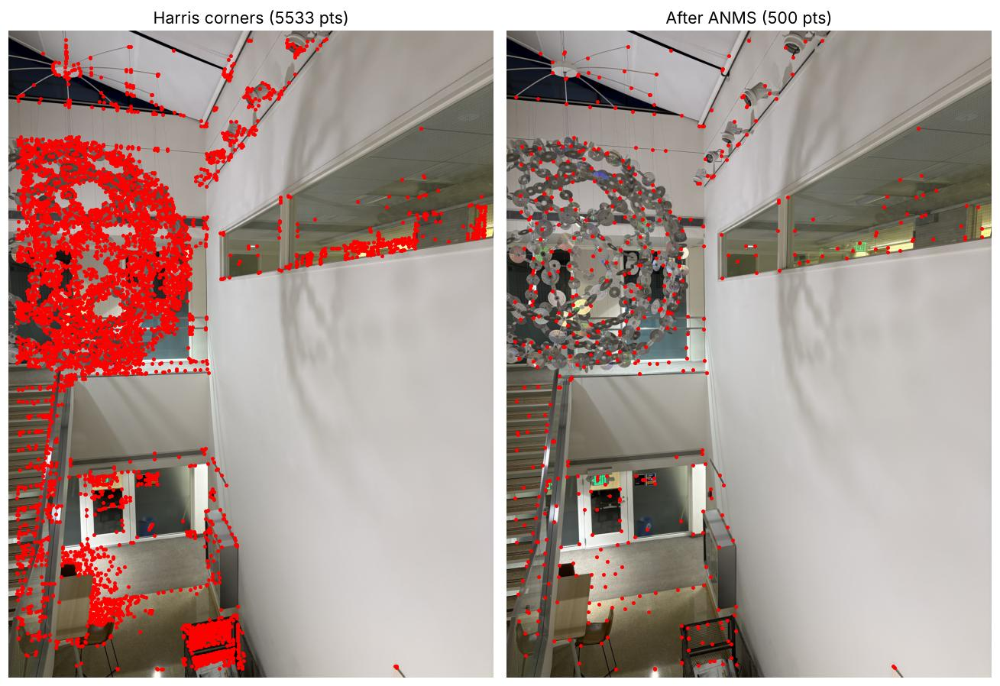
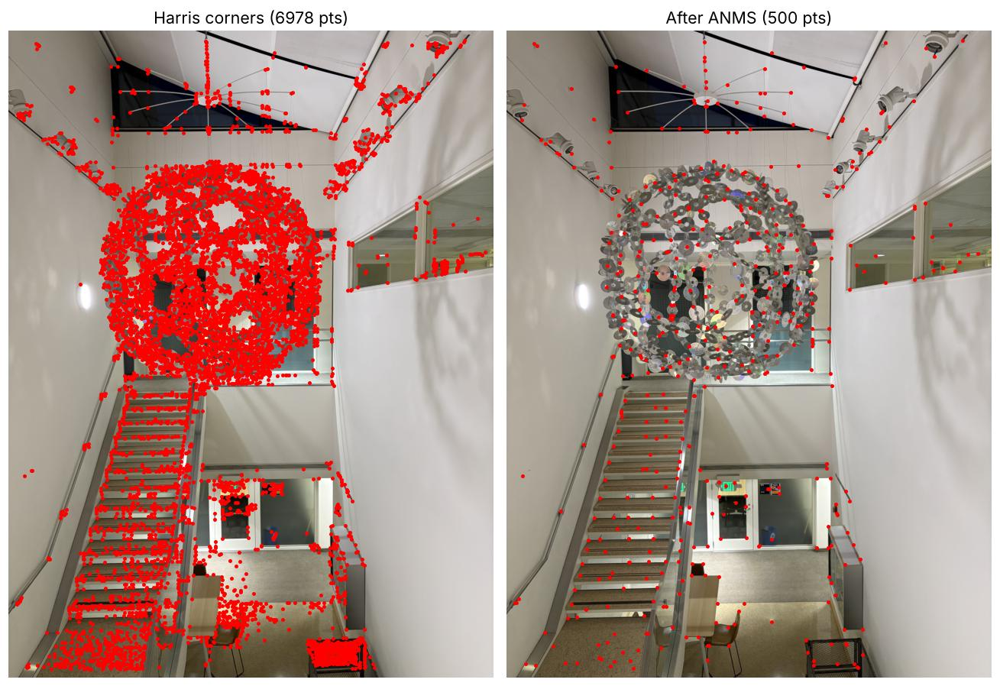
Without ANMS, the corners pile up on the chandelier, the stairs and the wire basket at the bottom. After ANMS, the 500 corners are much more even: the chandelier still gets its share, but so do the ceiling wires, the light fixtures, the interior window, the stair railing and the doorway. The plain white wall still has almost none, which is correct, since there's nothing on it that could be matched.
Turning each corner into a small normalized patch that can be compared between images.
def extract_descriptors(gray, coords, window=40, size=8, sigma=2):
blurred = gaussian_filter(gray, sigma)
half, step = window // 2, window // size
descs = []
for y, x in coords.T:
patch = blurred[y-half:y+half:step, x-half:x+half:step] # 8x8
patch = (patch - patch.mean()) / (patch.std() + 1e-8) # bias/gain
descs.append(patch.ravel())
return np.array(descs)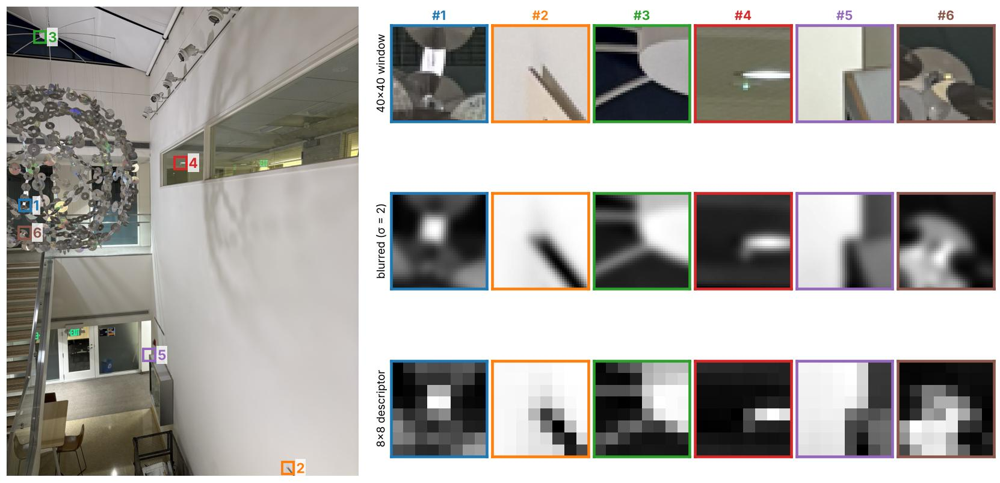
Each 8×8 descriptor is a coarse but recognizable copy of its window: the bright CD hole in #1, the diagonal edge in #2, the white chandelier hub against the dark skylight in #3, the light streak in the window in #4. Normalization stretches each patch to its full contrast range, which is why the faint edge in #2 comes out as dark as the high-contrast corner in #3. Every descriptor has mean 0 and standard deviation 1.
Pairing up descriptors between the two images and throwing out the ambiguous pairs.
For every descriptor in soda1, I find the closest descriptor in soda2 (its first nearest neighbor, 1-NN) and the second closest (2-NN), measured by Euclidean distance between the 64-number vectors. The closest one isn't automatically a good match: every descriptor has some nearest neighbor, even a corner that isn't visible in the other photo at all.
So I use Lowe's ratio test. If a match is right, its 1-NN should be much closer than anything else, so the ratio d1-NN / d2-NN is small. If the 1-NN and 2-NN are about equally close, the descriptor is ambiguous, which happens a lot on repeated texture like the CDs and the stair steps, and the match is likely wrong. Figure 6b of the paper shows this: correct matches have low ratios and incorrect ones pile up toward 1. Following it, I keep a match only if the ratio is below 0.6. I skip the paper's Section 6.
def match_features(desc1, desc2, ratio=0.6):
D = dist2(desc1, desc2) # squared distances, (N1, N2)
order = np.argsort(D, axis=1)
nn1, nn2 = order[:, 0], order[:, 1] # 1-NN and 2-NN for each row
rows = np.arange(len(desc1))
d1, d2 = np.sqrt(D[rows, nn1]), np.sqrt(D[rows, nn2])
keep = d1 / d2 < ratio # Lowe's ratio test
return np.column_stack([rows[keep], nn1[keep]]) # (i in image 1, j in image 2)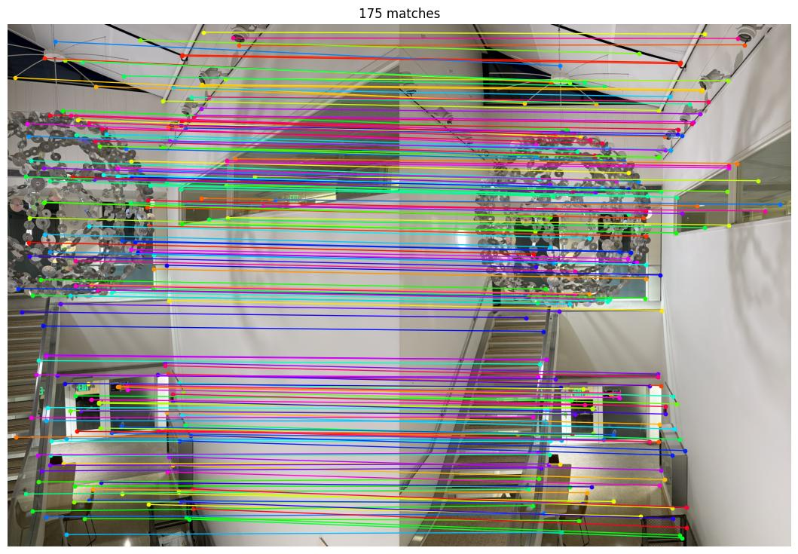
| Ratio threshold | 0.4 | 0.5 | 0.6 | 0.7 | 0.8 |
|---|---|---|---|---|---|
| Matches kept (of 500) | 100 | 144 | 175 | 207 | 234 |
Out of 500 corners, 175 pass the test. Almost every line joins the same physical spot in both photos: chandelier to chandelier, railing to railing, doorway to doorway. Since I only turned the camera between shots, the correct matches all run in nearly the same direction, which makes the few wrong ones easy to spot as lines at a different angle, mostly on the ceiling wires. A stricter threshold removes more of those but also loses good matches; the rest are left for RANSAC in B.4.
Fitting the homography to the matches while ignoring the wrong ones, then stitching with my Part A code.
def ransac_H(pts1, pts2, n_iter=2000, eps=2.0, seed=0):
rng = np.random.default_rng(seed)
best = np.zeros(len(pts1), bool)
for _ in range(n_iter):
idx = rng.choice(len(pts1), 4, replace=False) # 4 random matches
H = computeH(pts1[idx], pts2[idx]) # exact fit
err = np.linalg.norm(apply_H(H, pts1) - pts2, axis=1)
inliers = err < eps # within 2 px
if inliers.sum() > best.sum():
best = inliers
return computeH(pts1[best], pts2[best]), best # refit on all inliersThe whole pipeline, Harris corners through ANMS, descriptors, matching (ratio 0.6) and RANSAC, runs on each pair with no clicking. The H it returns goes straight into my Part A mosaic function, which warps image 1 into image 2's frame with my bilinear warp and blends with the same two-band blend.
| Set | Matches after ratio test | RANSAC inliers |
|---|---|---|
| Gateway | 27 | 12 |
| Soda | 175 | 55 |
| Sofa | 36 | 13 |
Soda has far more matches because the chandelier, stairs and railings give lots of distinctive corners, while the meeting room and living room are mostly blank walls. Fewer than half the matches survive in every set. Many of the rejected ones are on repeated texture like the CDs, where the ratio test can still pass a wrong match. Others are on objects at a different depth from the camera than the walls, which a single homography can only fit approximately within the 2-pixel tolerance.
Left: Part A, homography from 10 hand-clicked points. Right: Part B, homography from RANSAC.
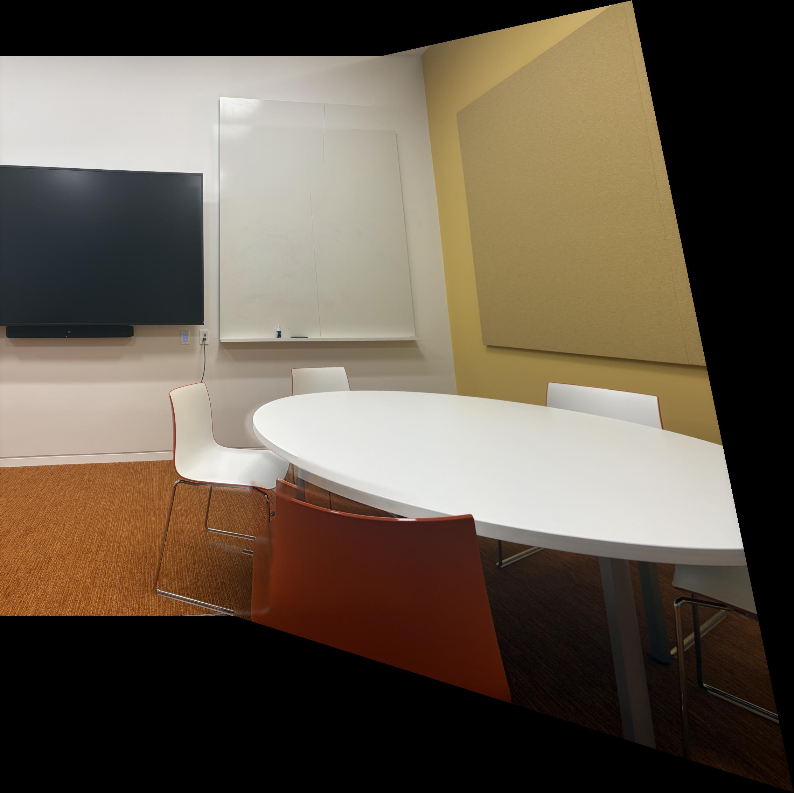
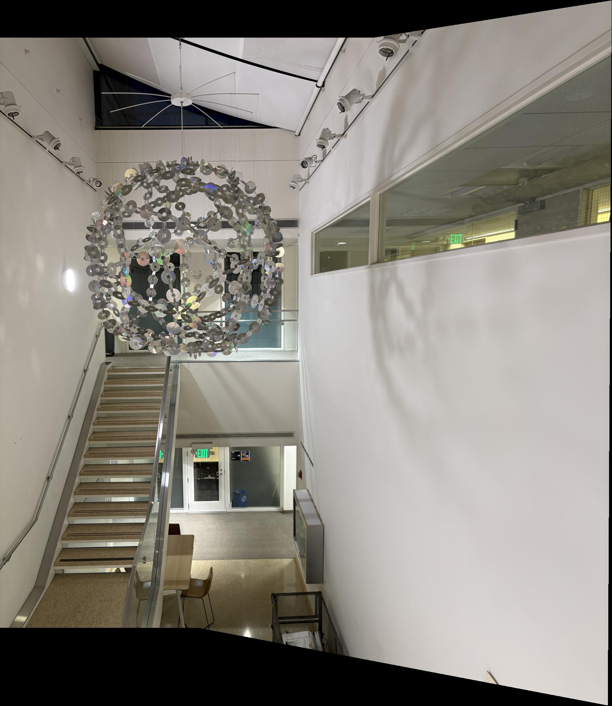
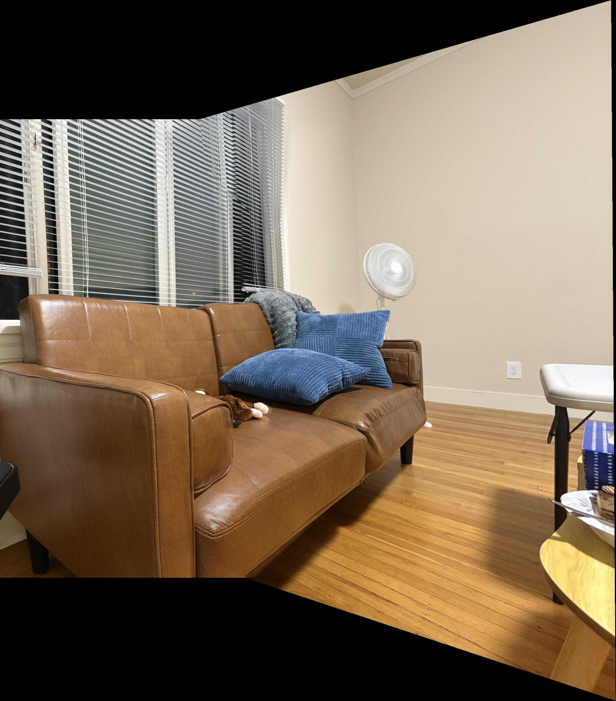
The image of soda hall stitches even without any clicking because the chandelier, stair railing, exit signs and the interior slanted window all line up with no doubling. With 55 inliers spread over the whole overlap, RANSAC has much more to work with than my 10 clicks. The sofa image also lines up well across the pillows, the blinds and the sofa back. The image of the gateway building is the weak one since it has only 12 inliers. The meeting room is mostly blank wall, so there just aren't many corners to match, and 11 of the 12 inliers sit in one narrow horizontal band across the middle of the photo. A homography fit to points in a band is pinned down well inside it but poorly above and below it, which is where the whiteboard's top edge is. My hand-clicked points were spread over the whole overlap, and the manual mosaic keeps the whiteboard seam as one line, though it has a small step at the whiteboard's top edge too.